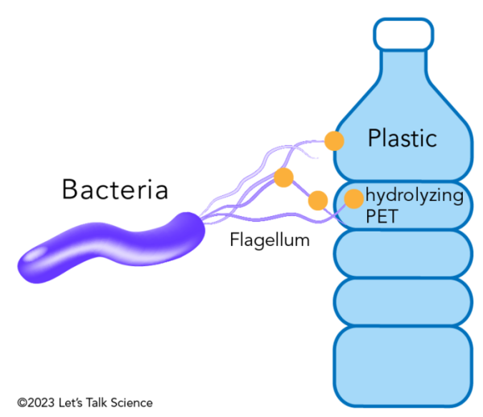
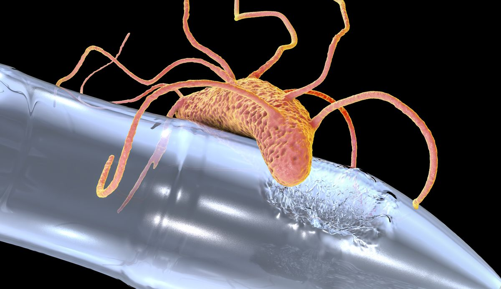

What Are Microplastic-Eating Bacteria?
Some bacteria have developed the ability to break down plastics, especially polyethylene terephthalate (PET), which is commonly used in products like water bottles and food packaging.
Meet Ideonella sakaiensis
One such bacterium is Ideonella sakaiensis. This microbe produces enzymes that can degrade PET plastic into smaller molecules. These molecules are then used by the bacteria as a food source.
Genetically Modified Bacteria in Saltwater
In 2023, researchers made a breakthrough by genetically engineering a saltwater-loving bacterium, Vibrio natriegens, to break down PET plastic. They used DNA from Ideonella sakaiensis and inserted it into a plasmid—an independent genetic sequence—that was then introduced into V. natriegens. This allowed V. natriegens to produce plastic-eating enzymes on its cell surface. The genetically modified bacterium successfully broke down PET microplastics in a saltwater environment at room temperature. This work, supported by the U.S. National Science Foundation, marks the first time an organism has been engineered to break down PET in ocean-like conditions.
Infographic/Mural
Why It Matters
This discovery offers hope for reducing the global plastic waste problem. Microplastic-eating bacteria could potentially help clean up polluted environments. However, this method is not a complete solution, as many types of plastics are not biodegradable and require different approaches for recycling or disposal.
Science in Public Spaces
To raise awareness about this scientific breakthrough, I proposed creating a mural or infographic near the beach where human activity and littering directly impact our oceans. The mural would serve not only as a piece of public art but also as an educational tool. Our goal is to engage beachgoers with beautiful, meaningful visuals that teach them about science and inspire eco-conscious behavior. By placing the mural in a highly trafficked area, we aim to reduce littering and increase appreciation for scientific solutions to environmental issues.
Source
"Genetically modified bacteria break down plastics in saltwater" – AIChE Journal, October 26, 2023